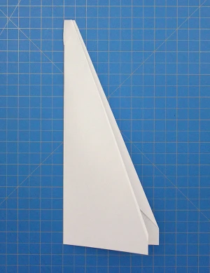
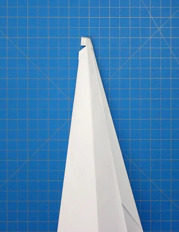
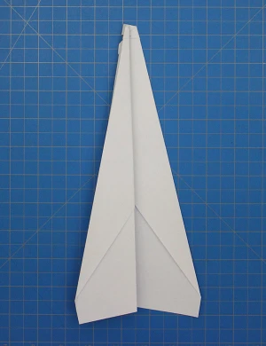

1Step 1
Crease the sheet in half, then bring both upper corners into the centre.
Crease the sheet in half, then bring both upper corners into the centre.

Next fold the tip back about 3 cm.

Bring both upper edges onto the midline.

Close the plane along the centre spine.

Take scissors and cut a slit matching the one in the photo.

Now fold the first wing out into place.
With a calm day and a level throw, expect roughly 22–30 metres (about 72–98 feet). Among the 37 distance-rated designs in this collection it ranks #1. Wind, paper weight, and small crease errors all change the result.
A well-trimmed Lift Off should hold about 4–5 seconds of hang time. That places it #27 of 36 designs for time aloft. Launching from a higher spot and keeping the wings level will extend it.
It is best for far, straight throws. Folding skill is beginner. Use Letter & A4, 6 steps, needs a cut.
Hold the plane level and throw with a smooth, firm push, aiming straight ahead rather than upward.